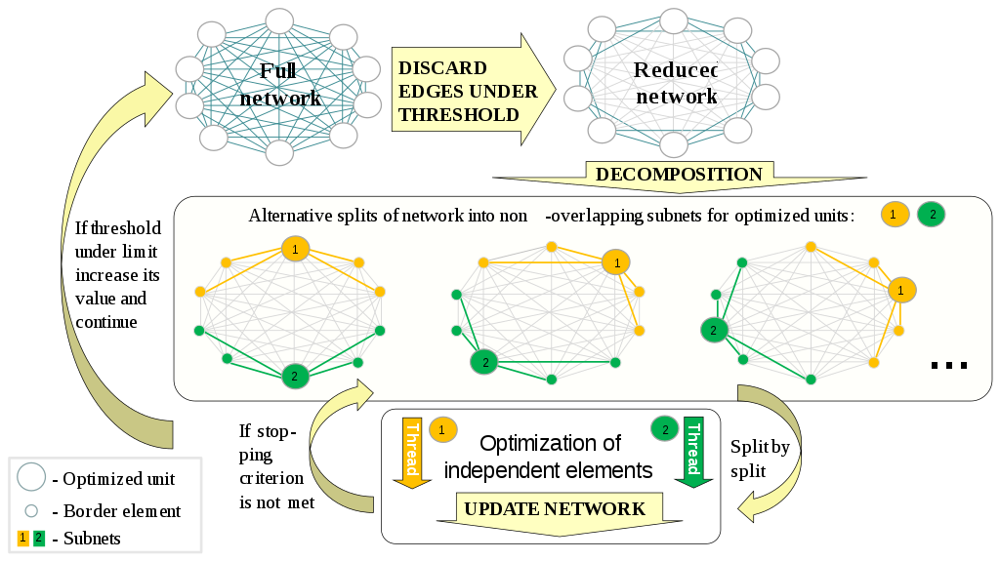

| Article Year -- 2020
| Article Year -- 2020
 | Tags --
cap theorem |
consistency |
availability |
partition tolerance |
distributed systems |
| Tags --
cap theorem |
consistency |
availability |
partition tolerance |
distributed systems |
The CAP theorem was first introduced by Eric Brewer in the year 2000 when distributed computing was quickly making its way into the world. In short, the theorem proposes that in any networked system with shared data, there exists a trade-off between consistency, availability, and partition tolerance. Okay, so what does this translate to? The easiest way to understand the theorem is by looking at each property on their own:
Consistency: A system has achieved consistency when every client on the network has the same view of the data at any given time. Each server will return the correct response for each request.
Availability: A system has achieved availability when every client eventually returns a response for all requests within a reasonable time-frame.
Partition Tolerance: A system has achieved partition tolerance when it continues to process data when network partitions occur. A network partition refers to the act of a network splitting due to some failure in the system. This property can be seen more as a statement about the system in which the CAP theorem is applied.
Note the italicized words on the first two properties. When applying the CAP theorem to a distributed system, we are mostly interested in the first two properties. The third property, Partition Tolerance, is a requirement in any distributed system and so in actuality, we end up with a choice between C(Consistency) and P(Partition Tolerance), or A(Availability) and P(Partition Tolerance). NoSQL databases like MongoDB and Redis are examples of PA systems since they focus first an availability and consistency second. Traditional relational databases like MSSQL and Oracle Database are examples of CA systems since they focus first on consistency and availability second. Another way to sum it up is that PA systems use the BASE (Basically Available, Soft state, Eventual consistency)principles, while the CA systems make use of the older ACID (Atomicity, Consistency, Isolation, Durability) principles.
While this method of understanding the CAP theorem is simple, it is, however, not entirely true. Several reasons exist as to why this is the case. 1. While partitions can certainly occur in a networked system, it is very rare these days, making the choice between C or A obsolete. 2. The choice between C and A can occur many times within the networked system, even between each operation. 3. The properties are not binary in their form. As an example, availability can scale from 0-100 percent and different networks may have different views of when a partition occurs. In reality, the trade-off is not between all 3 properties, but only between Consistency and Availability. They should not be weighted equally. The first two exist on a spectrum, while Partition Tolerance is a binary choice (either the network is partition tolerant or it is not). Also, for a system where no partition exists, we can have both consistency and availability.
You may have noticed the word 'Theorem' here, which means that a proof for it may also exist. It just so happens that it was proved only two years after its discovery by Brewer. I won't go deep into the math behind the proof here, but in short, the proof can be summed up as follows:
Let's say that we have 2 servers or nodes in a network - we call these p1 and p2. A client sends a request to p2 and expects a response. A partition has occurred between p1 and p2, meaning no communication between them is currently possible. This means that every message sent from p1 to p2 will be lost. For p2, this can be translated to the following two statements:
- p1 has received a 'write' request with value v1 and has sent an OK response
- p1 has received a 'write' request with value v2 and has sent an OK response
Since p2 cannot communication with p1, how will it know which response, v1 or v2, to respond with? It cannot distinguish between the two. It can eventually return a response, but then we cannot make sure that the response is correct. Alternatively, we can choose not to send a response at all. In a distributed system, no solution to this problem is possible, thus proving the theorem.
No communication between servers can be ensured to be 100% reliable. To attempt to resolve this problem, the servers may be decomposed into multiple groups called subnets.  As the image above illustrates, the network is being split into several smaller networks, with each iteration removing the least important connections within some threshold.


{kind=link}
{kind=link}